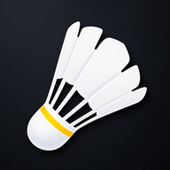
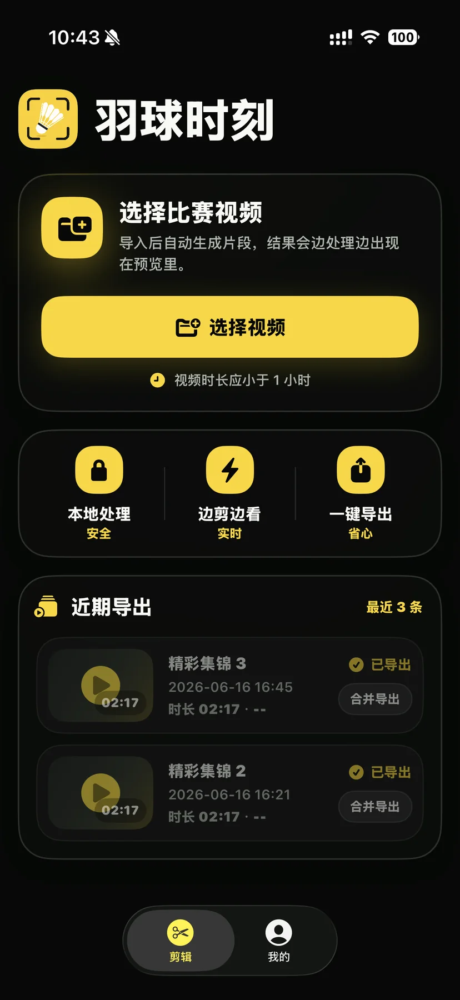
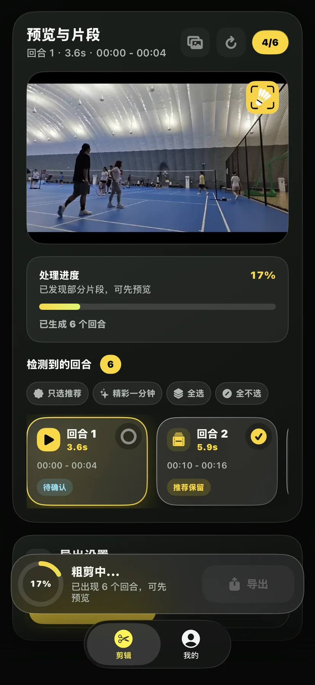
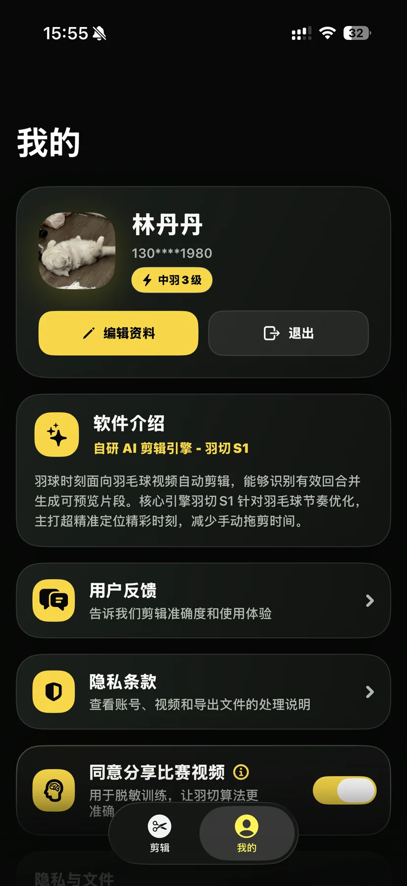

1
选择比赛视频
导入本地比赛视频，超过 1 小时会提前提示，避免长视频误导入。

羽球时刻 立即了解羽球时刻面向羽毛球比赛视频自动剪辑。选择视频后，AI 自动识别有效回合， 片段边处理边出现在预览里，推荐保留、精彩一分钟、合并导出一步完成。



原视频主要在手机端解析，不为了剪辑分析自动上传。
候选片段逐步出现，不必等完整视频全部分析完。
合并精彩集锦或分段保存，都能直接进入导出流程。
AI ENGINE
首轮快速发现可能的有效回合，随后整理片段边界，压掉开头等待、片尾冗余和无效移动， 让用户看到的是可预览、可选择、可导出的结果。
WORKFLOW
导入本地比赛视频，超过 1 小时会提前提示，避免长视频误导入。
处理过程中片段逐步出现，用户可以提前预览，不用等待最后一股脑展示。
只选推荐、精彩一分钟、全选、全不选四种动作，最终合并或分段导出。
FEATURES
生成的回合以横向卡片展示，点击即可切换预览，回合时长和时间段清晰可见。
AI 给出推荐保留片段，一键选择更稳的回合，减少用户逐个判断的压力。
自动挑选更精彩的回合，组合成一分钟左右短片，适合快速分享训练或比赛亮点。
批量选择模式和用户手动编辑双向联动，适合快速整理多段回合。
把选中的回合合成一个精彩集锦，导出后可直接分享给朋友。
每个回合单独保存，适合教练复盘、逐球分析或按片段归档。
导出时展示进度状态，离开 App 也能感知任务进展，失败可回到 App 重试。
首页和“我的”保留导出历史，可以查看详情、预览本地文件并再次分享。
星级反馈帮助改进剪辑精度；隐私条款和比赛视频授权开关清楚可控。
APP PREVIEW
羽球时刻不会因为剪辑分析自动上传原始视频。用户可以在“我的”里查看隐私条款， 也可以自主决定是否同意把比赛视频用于后续算法优化。
READY TO CUT